A seguir está uma lista de Haikyū!! volumes
Haikyū!! foi originalmente publicado como 402 capítulos na revista Weekly Shōnen Jump no Japão entre 20 de fevereiro de 2012 e 20 de julho de 2020 e foi posteriormente republicado pela Shueisha em uma série de 45 volumes tankōbon entre 4 de junho de 2012 e 4 de novembro de 2020. Viz Mediacomeçou publicando esses volumes em inglês a partir de 5 de julho de 2016, com o último lançamento previsto para agosto de 2021.
Antes do lançamento do mangá serializado, dois capítulos piloto one-shot foram publicados. O primeiro one-shot foi lançado em Jump NEXT! revista em 8 de janeiro de 2011 e o segundo one-shot foi lançado na Weekly Shōnen Jump em 25 de abril de 2011. No entanto, nenhum dos dois foi republicado em volumes e, em vez disso, foram incluídos nos guias da série.
Lista de Volumes:
- Capítulo 001: " Finais e Começos " ( Japonês :終わりと始まりOwari to Hajimari )
- Capítulo 002: "Karasuno High School Volleyball Club " ( japonês :烏野高校排球部Karasuno Kōkō Haikyū-bu )
- Capítulo 003: " Organismos unicelulares " ( japonês :単細胞生物Tansaibō Seibutsu )
- Capítulo 004: " O Maior Companheiro de Equipe " ( japonês :最強の味方Saikyō no Mikata )
- Capítulo 005: " O Rei da Corte " ( japonês :コート上の王様Kōto-jō no Ōsama )
- Capítulo 006: " História do ensino médio " ( japonês :中学のハナシChūgaku no Hanashi )
- Capítulo 007: " Palavras dos que não têm " ( japonês : “持たざる物”のことば"Motazaru Mono" no Kotoba )
- Capítulo 008: "A vista do topo " ( japonês :頂の景色Itadaki no Keshiki )
- Capítulo 009: "Nascimento de um Combo " ( japonês :コンビ誕生。Konbi Tanjō. )
- Capítulo 010: "Rookie Nerves " ( japonês :小心者の緊張Shōshinmono no Kinchō )
- Capítulo 011: "Reencontro e Fracasso " ( japonês : “再会”と“大失敗” "Saikai" para "Daishippai" )
- Capítulo 012: "De volta ao normal " ( japonês :通常運転Tsūjō Unten )
- Capítulo 013: "Uma Equipe Interessante " ( japonês :面白いチームOmoshiroi Chīmu )
- Capítulo 014: "Vs. o Grande Rei " ( japonês : VS“大王様” Bāsasu "Daiōsama" )
- Capítulo 015: "Reação Química " ( japonês :化学変化Kagaku Henka )
- Capítulo 016: " Outro Prodígio " ( japonês :もう１人の天才Mō Hitori no Tensai )
- Especial: "Tanaka Senpai's Nightmare " ( japonês :田中せんぱいの悪夢Tanaka-senpai no Akumu ) 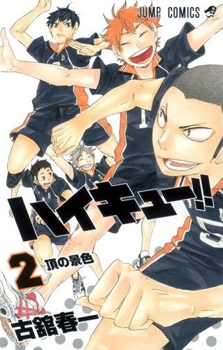
- Capítulo 017: "Tempestade " ( japonês :嵐Arashi )
- Capítulo 018: "Aquele Conhecido como o Ás " ( japonês : “エース”と呼ばれるひと"Ēsu" para Yobareru Hito )
- Capítulo 019: "Sentimentos honestos " ( japonês :本音Honne )
- Capítulo 020: "Deidade Guardiã " ( japonês : “守護神” "Shugoshin" )
- Capítulo 021: "Ambiente para o Ás " ( japonês :エースへのトスĒsu e no Tosu )
- Capítulo 022: "Idolização " ( japonês :憧れAkogare )
- Capítulo 023: "Mesmo Um Ponto " ( japonês :同じ１点Onaji Itten )
- Capítulo 024: "Vá, Equipe Karasuno! " ( japonês :チーム烏野、始動Chīmu Karasuno, Shidō )
- Capítulo 025: "Encontro Aleatório " ( japonês :遭遇Sōgū )
- Especial: "O que realmente aconteceu com as camisetas " ( japonês : Tシャツ裏事情Tī Shatsu Ura Jijō ) 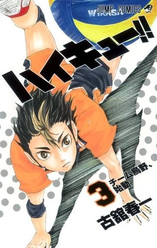
- Capítulo 026: " A Decisãob " ( japonês :決断Ketsudan )
- Capítulo 027: " A Reunião do Gato-Corvo " ( Japonês :ネコとカラスの再会Neko to Karasu no Saikai )
- Capítulo 028: "Um Monstro e Seu Clube " ( japonês : “鬼”と“金棒” "Oni" para "Kanabō" )
- Capítulo 029: "O Cérebro " ( japonês : “脳” "Nō" )
- Capítulo 030: "Como Voar " ( japonês :飛びかたTobikata )
- Capítulo 031: "Rivais! " ( japonês :ライバルRaibaru )
- Capítulo 032: "Gato crescido vs. Bebê corvo " ( japonês :大人ネコと雛カラスOtona Neko para Hina Karasu )
- Capítulo 033: "O que significa conectar " ( japonês : “繋ぐ”ということ"Tsunagu" para Iu Koto )
- Capítulo 034: "Vow for a Rematch " ( japonês :再戦を誓ってSaisen o Chickatte )
- Especial: "The Pudding Head Story " ( japonês :プリンヘッド物語Purinheddo Monogatari ) 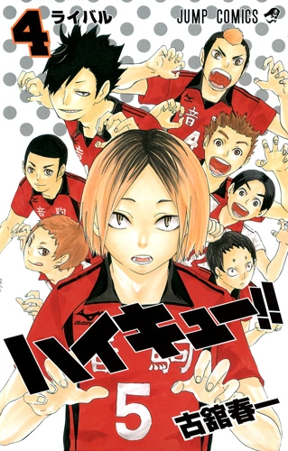
- Capítulo 035: "Oponentes Poderosos " ( japonês :強敵たちKyōteki-tachi )
- Capítulo 036: "Preparando-se para o Voo " ( Japonês :飛行準備Hikō Junbi )
- Capítulo 037: "Começa " ( japonês :突入Totsunyū )
- Capítulo 038: "Aquecimentos " ( japonês :ウォームアップWōmuappu )
- Capítulo 039: "O Retorno " ( japonês :復活Fukkatsu )
- Capítulo 040: "Vencedores e Perdedores " ( japonês :勝者と敗者Shōsha to Haisha )
- Capítulo 041: "Round 2 " ( japonês : ２回戦突入Nikaisen Totsunyū )
- Capítulo 042: "A Muralha de Ferro " ( japonês :鉄壁Teppeki )
- Capítulo 043: "Freak Quick Unleashed " ( japonês : “変人速攻”解禁"Henjin Sokkō" Kaikin )
- Capítulo 044: "The Greatest Decoy " ( japonês : “最強の囮” "Saikyō no Otori" ) 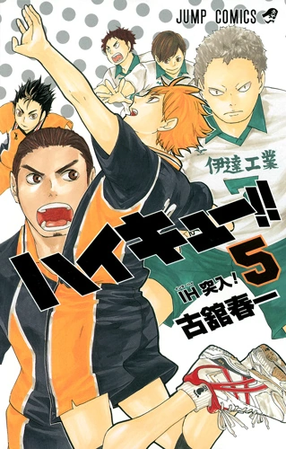
- Capítulo 045: " Atrás da Luz " ( japonês : “光”の裏側"Hikari" no Uragawa )
- Capítulo 046: " Got Your Back " ( japonês :背中の護りSenaka no Mamori )
- Capítulo 047: " Ases and Heroes " ( japonês :エースとヒーローĒsu to Hīrō )
- Capítulo 048: " O Maestro " ( japonês : “指揮者” "Shikisha" )
- Capítulo 049: " Vs. o Grande Rei: Parte 2 " ( japonês : VS“大王様”・２Bāsasu "Daiōsama"・2 )
- Capítulo 050: " Batalha Setter! " ( japonês :ザ・セッター対決Za・Settā Taiketsu )
- Capítulo 051: " A força de uma usina de força " ( japonês : “強豪”と呼ばれる実力"Kyōgō" to Yobareruu Jitsuryoku )
- Capítulo 052: " Makings of an Ace " ( japonês :エースの資質Ēsu no Shishitsu )
- Capítulo 053: " Tōru Oikawa não é nenhum prodígio " ( japonês :及川徹は天才ではないOikawa Tōru wa Tensai de wa Nai )
- Especial: " The Iron Wall Will Rise and Rise Again " ( japonês :鉄壁は何度でも築かれるTeppeki wa Nandodemo Kizukareru ) 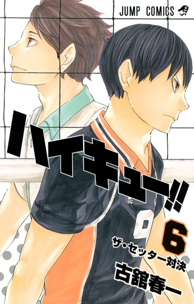
- Capítulo 054: "Força do Upperclassman " ( japonês : “先輩”の実力"Senpai" no Jitsuryoku )
- Capítulo 055: "My Best and Your Best " ( japonês : “俺のベスト”と“お前のベスト” "Ore no Besuto" to "Omae no Besuto" )
- Capítulo 056: "The Elite Few " ( japonês :少数精鋭Shōsūseiei )
- Capítulo 057: "Quebra " ( japonês : “ブレイク” "Bureiku" )
- Capítulo 058: "De volta ao normal: Parte 2 " ( japonês :通常運転・２Tsūjō Unten・2 )
- Capítulo 059: "Comunicação Direta " ( japonês : “真っ向コミュニケーション” "Makkō Komyunikēshon" )
- Capítulo 060: "Evolução " ( japonês :進化Shinka )
- Capítulo 061: "Talento básico e um monstrinho " ( japonês :チームの地力と小さなケモノChīmu no Jiriki to Chīsana Kemono )
- Capítulo 062: "Toda a largura da quadra " ( japonês :コートの横幅めいっぱいKōto no Yokohaba Meippai ) 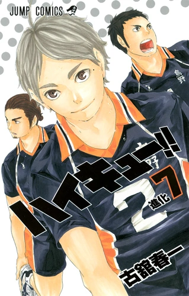
- Capítulo 063: " Momentum Swing " ( japonês :流れを変える一本Nagare o Kaeru Ippon )
- Capítulo 064: " Momentum Swing: Part 2 " ( japonês :流れを変える一本・２Nagare o Kaeru Ippon・2 )
- Capítulo 065: " Recuperando o atraso " ( japonês :背中Senaka )
- Capítulo 066: " Novamente " ( japonês : “もう一回” "Mō Ikkai" )
- Capítulo 067: " Sorrisos " ( japonês :笑顔Egao )
- Capítulo 068: " Ex-Lonely Tyrant " ( japonês :脱・“孤独の王様” Datsu・"Kodoku no Ōsama" )
- Capítulo 069: " Os Perdedores " ( japonês :敗者Haisha )
- Capítulo 070: " Dia 3 " ( japonês : “３日目” "Mikkame" )
- Capítulo 071: " Arrependimentos e Novos Objetivos " ( japonês :後悔と目標Kōkai to Mokuhyō )
- Especial 1: " Por favor, ensine-me! Ennoshita Senpai! " ( Japonês :教えて！縁下先輩！Oshiete !)
- Especial 2: " Classe 1-3's Kageyama-kun " ( japonês : ３組の影山君San-kumi no Kageyama-kun ) 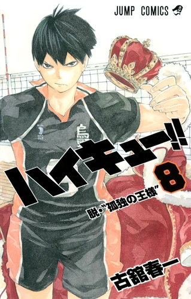
- Capítulo 072: " Vamos para Tóquio!! " ( japonês :レッツゴートーキョー!! Rettsu Gō Tōkyō!! )
- Capítulo 073: " The Road to Tokyo " ( japonês :東京遠征への道Tōkyō Ensei e no Michi )
- Capítulo 074: " Luz solar direta " ( japonês :直射日光Chokusha Nikkō )
- Capítulo 075: " Aldeão B " ( japonês : “村人B” "Murabito Bī" )
- Capítulo 076: " Criador " ( japonês :クリエイターKurieitā )
- Capítulo 077: " Confrontando o Campeão " ( japonês :王者との対峙Ōja to no Taiji )
- Capítulo 078:" Vamos para Tóquio!! De verdade!! " ( japonês :レッツゴートーキョー!!本番!! Rettsu Gō Tōkyō!!
Honban!! ) - Capítulo 079: " Center Ace " ( japonês : “センターエース” "Sentā Ēsu" )
- Capítulo 080: " Desejo " ( japonês : 「欲」"Yoku" ) 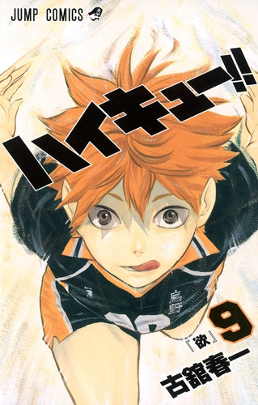
- Capítulo 081: " Espaço para crescer " ( japonês :伸びしろNobishiro )
- Capítulo 082: " Ruptura " ( japonês :決裂Kesuretsu )
- Capítulo 083: " Tempo " ( japonês : “テンポ” "Tenpo" )
- Capítulo 084: " Novas Evoluções " ( japonês :それぞれの進化Sorezore no Shinka )
- Capítulo 085: " Omnívoros " ( japonês :雑食Zasshoku )
- Capítulo 086: " Moonrise " ( japonês :月の出Tsuki no De )
- Capítulo 087: " O orgulho de Ace " ( japonês :エースの意地Ēsu no Iji )
- Capítulo 088: " Herói Ilusório " ( japonês :幻覚ヒーローGenkaku Hīrō )
- Capítulo 089: " Razões " ( japonês :理由Riyū )
- Especial: " Gerente Feminina " ( japonês :女子マネージャーJoshi Manējā ) 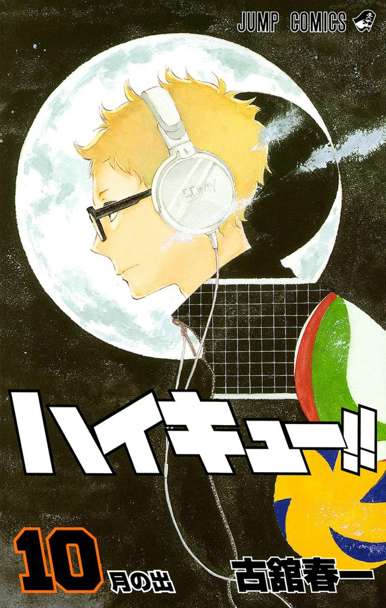
- Capítulo 090: " De volta à ação " ( japonês :再起動Saikidō )
- Capítulo 091: " Vs. the Umbrella" ( japonês : VS“傘” Bāsasu "Kasa" )
- Capítulo 092: " Quietude e Movimento" ( japonês :動と静Dō to Sei )
- Capítulo 093: " Engrenagens" ( japonês :歯車Haguruma )
- Capítulo 094: " Orientação Irrefletida" ( japonês :無意識の先導Muishiki no Sendō )
- Capítulo 095: " Forma de Ace" ( japonês : 「エース」のカタチ"Ēsu" no Katachi )
- Capítulo 096: " The Black Team" ( japonês :黒のチームKuro no Chīmu )
- Capítulo 097: " Acima" ( japonês : “上” "Ue" )
- Capítulo 098: " Conversa " ( japonês :会話Kaiwa ) 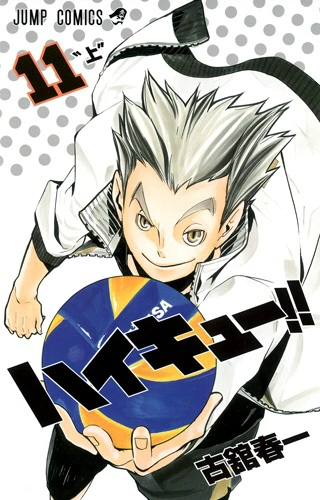
- Capítulo 099: " O Torneio Começa! " ( Japonês :試合開始!! Shiai Kaishi!! )
- Capítulo 100: " Imagem " ( japonês :カッコKakko )
- Capítulo 101: " Arrependimentos e Motivação " ( japonês :後悔と原動力Kōkai to Gendōryoku )
- Capítulo 102: " Poder Puro e Simples " ( japonês :シンプルで純粋な力Shinpuru de Junsuina Chikara )
- Capítulo 103: " Guerra Terrestre " ( japonês :地上戦Chijōsen )
- Capítulo 104: " Baby Bird " ( japonês :幼鳥Yōchō )
- Capítulo 105: " No mesmo campo " ( japonês :同じ土俵Onaji Dohyō )
- Capítulo 106: " Obstáculos " ( japonês :それぞれの壁Sorezore no Kabe )
- Capítulo 107: " Puxa de Crescimento " ( japonês :育ち盛りSodachizakari )
- Especial: " Por que Noya-san é tão legal, mas ainda não é popular entre as garotas ?") 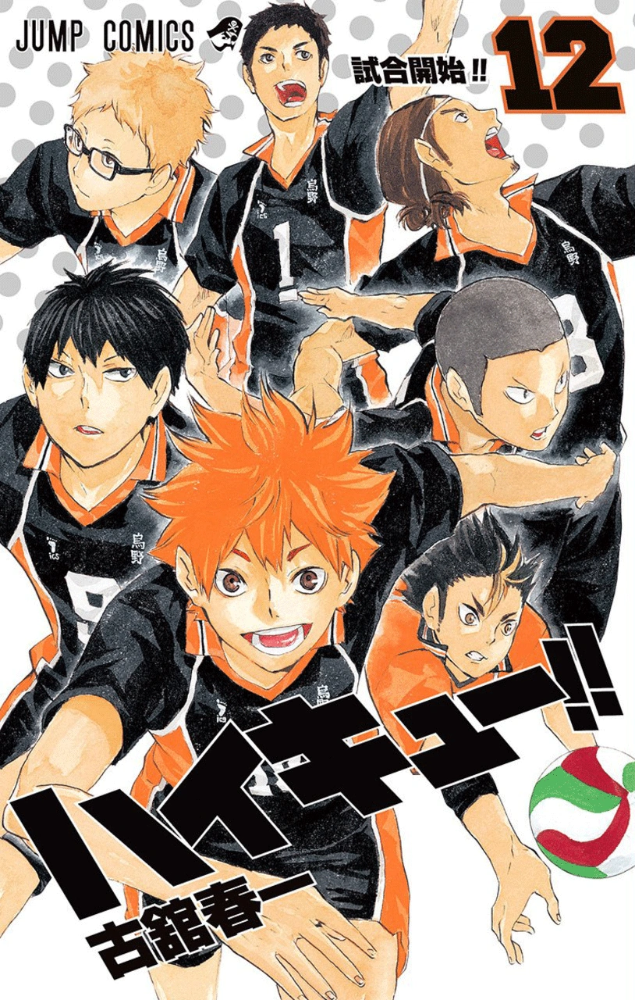
- Capítulo 108: " As Equipes Chegam " ( japonês :集結Shūketsu )
- Capítulo 109: " Que comece o jogo " ( japonês :開戦Kaisen )
- Capítulo 110: " A força necessária para a liberdade " ( japonês :自由の為の力Jiyū no Tame no Chikara )
- Capítulo 111: " Inexperiente " ( japonês :未熟Mijuku )
- Capítulo 112: " Playground " ( japonês :アソビバAsobiba )
- Capítulo 113: " Playground: Parte 2 " ( japonês :アソビバ・２Asobiba・2 )
- Capítulo 114: " Playground: Parte 3 " ( japonês :アソビバ・３Asobiba・3 )
- Capítulo 115: " Próximo " ( japonês :次へTsugi e )
- Capítulo 116: " Vs. Wakutani Minami " ( japonês : VS和久谷南高校Bāsasu Wakutani Minami Kōkō )
- Capítulo 117: " Enquanto luta contra o pequeno gigante " ( japonês :小さな巨人戦の途中ですかChīsana
Kyojin-Sen no Tochū Desu ka )
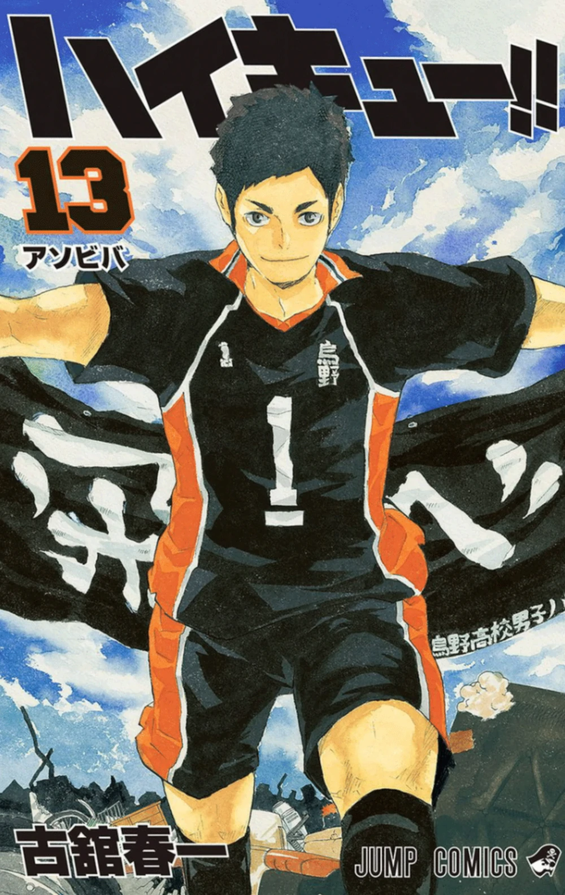
- Capítulo 118: " Fundação substituta " ( japonês :土台代理Dodai Dairi )
- Capítulo 119: " Batalha do Desistente " ( japonês :根性無しの戦いKonjōnashi no Tatakai )
- Capítulo 120: " Batalha do Desistente: Parte 2 " ( japonês :根性無しの戦い・２Konjōnashi no Tatakai・2 )
- Capítulo 121: " Batalha com o Pequeno Gigante Retomada " (japonês :小さな巨人戦再開Chīsana Kyojin-Sen
Saikai) - Capítulo 122: " Desafiante " ( japonês :挑戦Chōsen )
- Capítulo 123: " Outro ídolo " ( japonês :もう一つの憧れMō Hitotsu no Akogare )
- Capítulo 124: " Battle's End " ( japonês :終盤戦Shūbansen )
- Capítulo 125: " Aqueles que perderam " ( japonês :敗北者達Haibokusha-tachi )
- Especial 1: " Nisekyū!! " ( japonês :ニセキュー!! Nisekyū!! )
- Especial 2: " V-ball Cards!! O Caminho para a Grandeza! " ( Japonês :バボカ!!最強への道!! Baboka!! Saikyō e
no Michi!! )
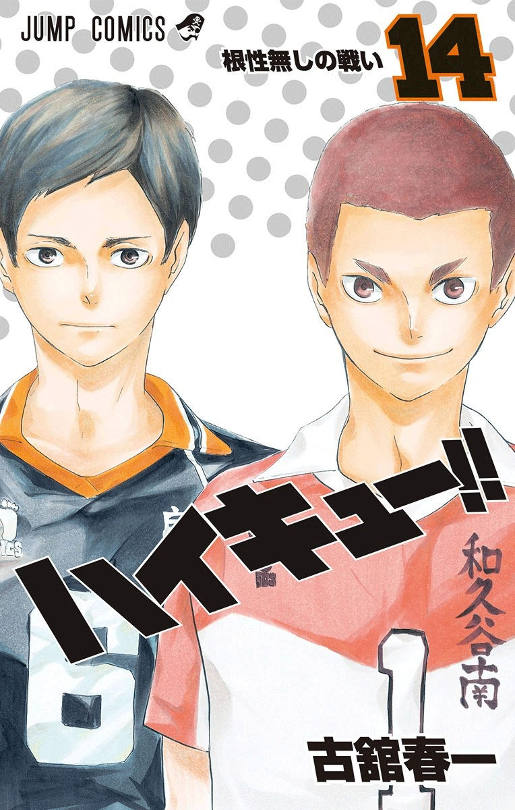
- Capítulo 126: " O Terceiro Painel " ( japonês : “３枚目” “Sanmaime” )
- Capítulo 127: " Criança Dourada " ( japonês :金の赤子Kin no Akago )
- Capítulo 128: " A Muralha Será Reconstruída " ( japonês :鉄壁は何度でも築かれるTeppeki wa Nandodemo Kizukareru )
- Capítulo 129: " O Novo Karasuno " ( japonês :新生・烏野Shinsei・Karasuno )
- Capítulo 130: " Superar " ( japonês :払拭Fusshoku )
- Capítulo 131: " Engrenagens de Aoba Johsai " ( japonês :青葉城西の歯車Aoba Jōsai no Haguruma )
- Capítulo 132: " Destruidor " ( japonês :壊し屋Kowashiya )
- Capítulo 133: " Batalha Setter: Round 2 " ( japonês :セッター対決 ROUND2 Settā Taiketsu Raundo Ni )
- Capítulo 134: " Ambos os times " ( japonês :お互い様O Tagai-sama )
- Capítulo 135: " Slow Starter " ( japonês :スロースターターSurōsutātā )
- Especial: " Diretor Ennoshita " ( japonês :縁下監督Ennoshita Kantoku ) 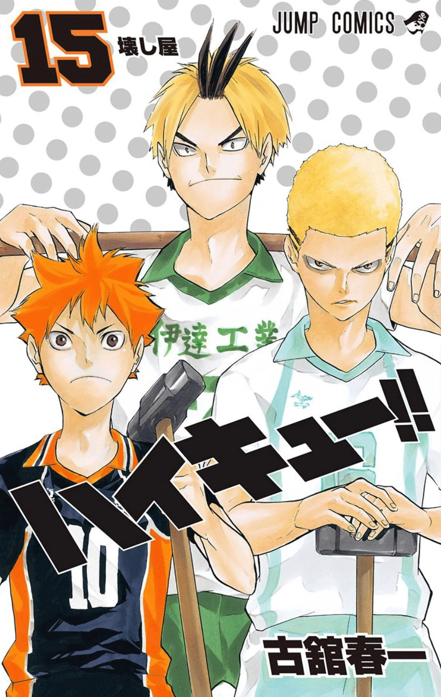
- Capítulo 136: " Momentum Swing: Parte 3 " (japonês :流れを変える一本・３Nagare o Kaeru Ippon・3 )
- Capítulo 137: " Batalha do ex-desistente " (japonês :元・根性無しの戦いMoto・Konjōnashi no Tatakai )
- Capítulo 138: " Serving: The Ultimate Attack " (japonês :サーブという究極の攻撃Sābu to Iu Kyūkyoku no Kōgeki)
- Capítulo 139: " Archnemesis " (japonês :宿敵Shukuteki)
- Capítulo 140: " Vagabundos " (japonês :輩Yakara)
- Capítulo 141: " Equipe " (japonês : “チーム” "Chīmu")
- Capítulo 142: " Tipos de Força " (japonês :強さのかたちTsuyosa no Katachi)
- Capítulo 143: " Luz " (Japanese: 灯 Tomoshi)
- Capítulo 144: " Na Zona " (Japanese: 極限スイッチ Kyokugen Suicchi)
- Especial: " Oikawa Hanger " (Japanese: おいかわハーンガー Oikawa Hāngā) 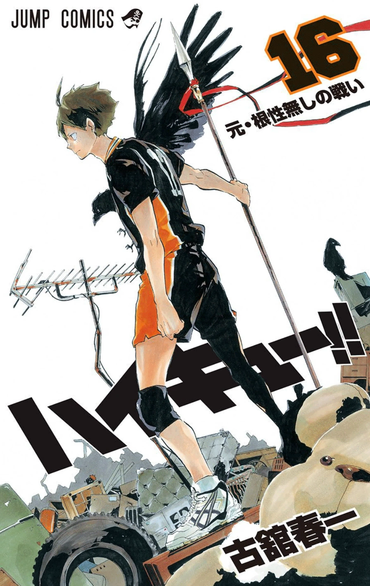
- Capítulo 145: " Na Zona: Parte 2 " ( japonês :極限スイッチ２Kyokugen Suicchi 2)
- Capítulo 146: " Talento e Instinto " ( japonês :才能とセンスSainō to Sensu)
- Capítulo 147: " Desafio frontal " ( japonês :真っ向勝負Makkō Shōbu)
- Capítulo 148: " Declaração de Guerra " ( japonês :宣戦布告Sensen Fukoku)
- Capítulo 149: " Encontros desencadeiam reações químicas " ( japonês :出会いの化学変化Deai no
Kagaku Henka) - Capítulo 150: " Saudações " ( japonês :ごあいさつGo Aisatsu)
- Capítulo 151: " Finalistas pela primeira vez " ( japonês :決勝初心者Kesshō Shoshinsha)
- Capítulo 152: " Teme o Canhoto " ( japonês : “左”の脅威"Hidari" no Kyōi)
- Capítulo 153: " Terceiro golpe " ( japonês : ３本目Sanbonme)
- Especial: " A luta não acabou " ( japonês :戦いは終わらないTatakai wa Owaranai) 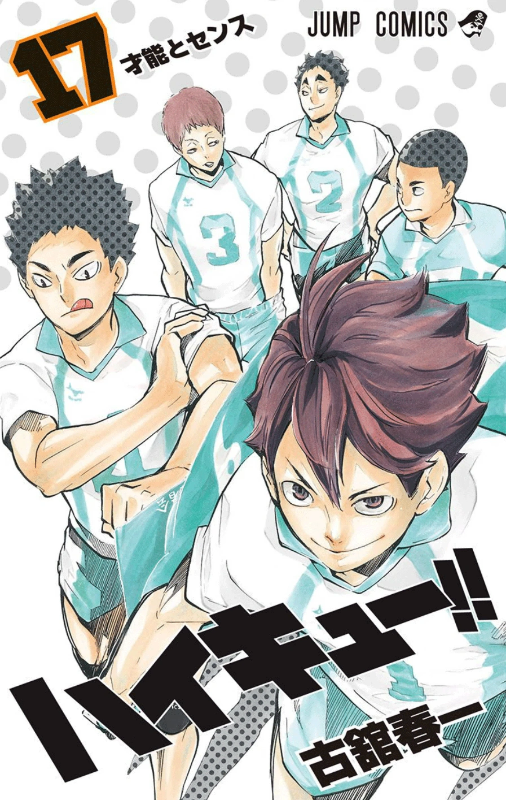
Título do Volume lançamento japonês versão em inglês
1 Hinata e Kageyama ( japonês :日向と影山Hinata para Kageyama ) 4 de junho de 2012 5 de julho de 2016

2 A vista do topo ( japonês :頂の景色Itadaki no Keshiki ) 3 de agosto de 2012 2 de agosto de 2016
3 Vamos, Equipe Karasuno! (Japonês:チーム烏野、始動Chīmu Karasuno, Shidō) 4 de outubro de 2012 6 de setembro de 2016
4 Rivais! ( japonês :ライバルRaibaru ) 4 de janeiro de 2013 4 de outubro de 2016
5 Inter-High começa! ( Japonês :インターハイ突入! Intāhai Totsunyū! ) 4 de março de 2013 1º de novembro de 2016
6 Batalha de Setter! ( Japonês :ザ・セッター対決Za・Settā Taiketsu ) 2 de maio de 2013 6 de dezembro de 2016
7 Evolução ( japonês :進化Shinka ) 2 de agosto de 2013 2 de janeiro de 2017
8 Ex-Lonely Tyrant (japonês :脱・孤独の王様」Datsu・"Kodoku no Ōsama") 4 de outubro de 2013 7 de fevereiro de 2017
9 Desejo ( japonês : 「欲」"Yoku" ) 4 de janeiro de 2014 7 de março de 2017
10 Moonrise ( japonês :月の出Tsuki no De ) 4 de abril de 2014 4 de abril de 2017
11 Acima ( japonês : “上” "Ue" ) 4 de junho de 2014 2 de maio de 2017
12 O Torneio Começa! ( japonês :試合開始!! Shiai Kaishi!! ) 4 de agosto de 2014 6 de junho de 2017
13 Playground ( japonês :アソビバAsobiba ) 3 de outubro de 2014 4 de julho de 2017
14 Batalha do Desistente ( japonês :根性無しの戦いKonjōnashi no Tatakai ) 27 de dezembro de 2014 1º de agosto de 2017
15 Destruidor ( japonês :壊し屋Kowashiya ) 4 de março de 2015 5 de setembro de 2017
16 Ex-Quitter's Battle(japonês :元・根性無しの戦いMoto・Konjōnashi no Tatakai) 1º de maio de 2015 3 de outubro de 2017
17 Talento e Instinto ( japonês :才能とセンスSainō to Sensu ) 4 de agosto de 2015 7 de novembro de 2017